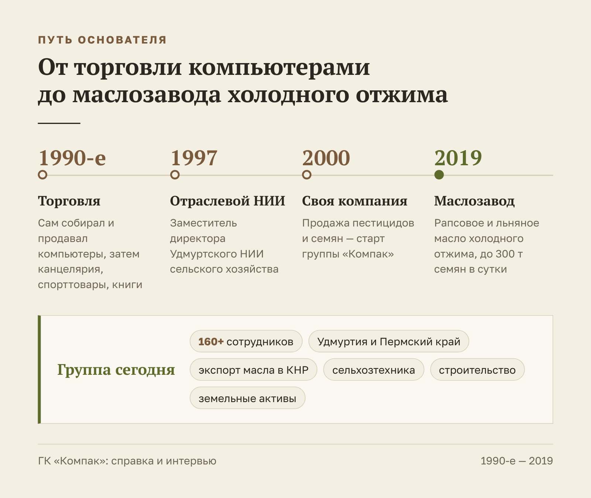
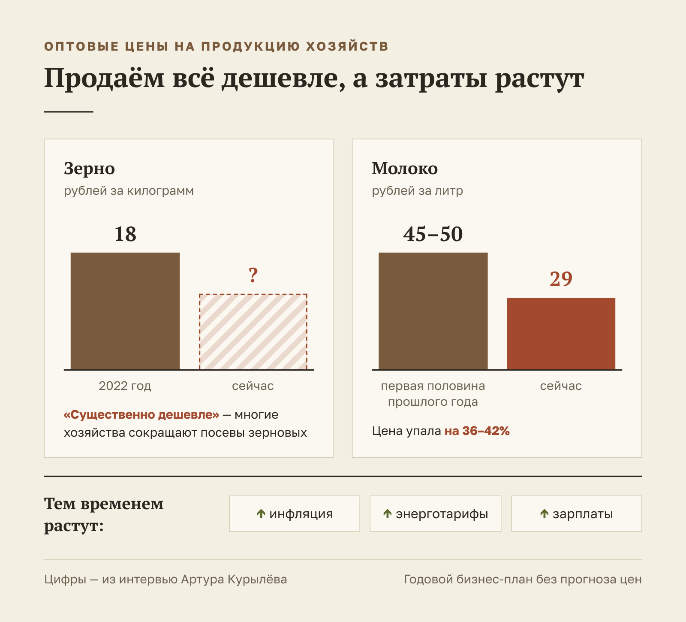
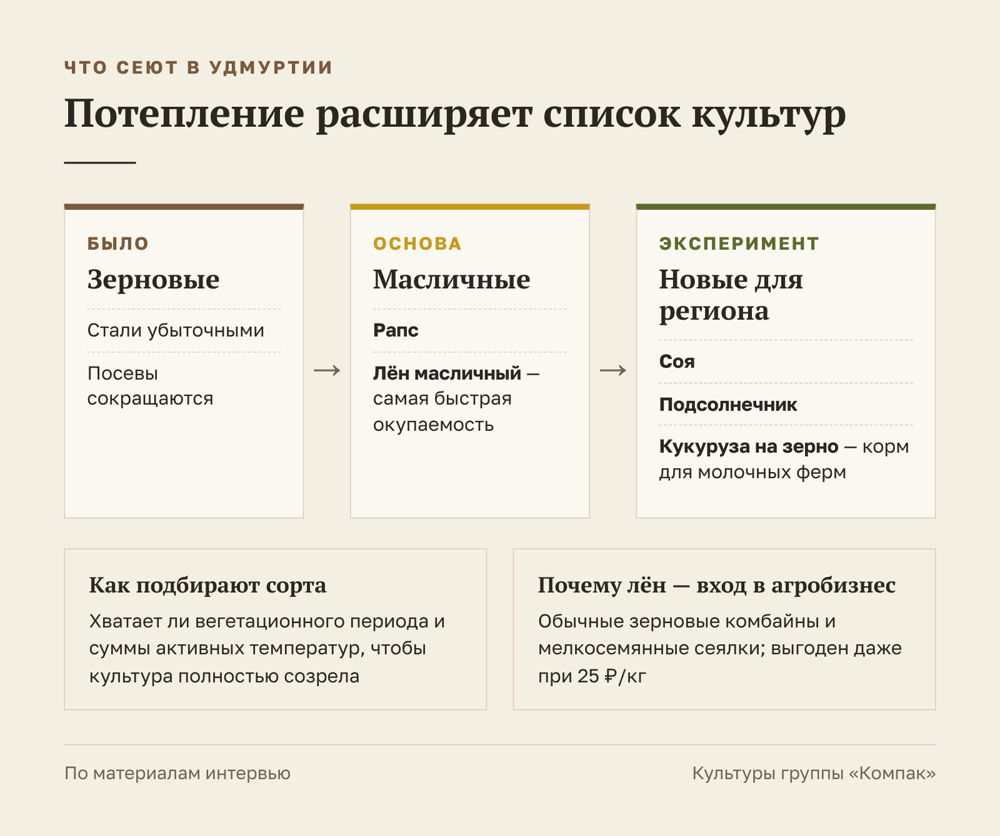
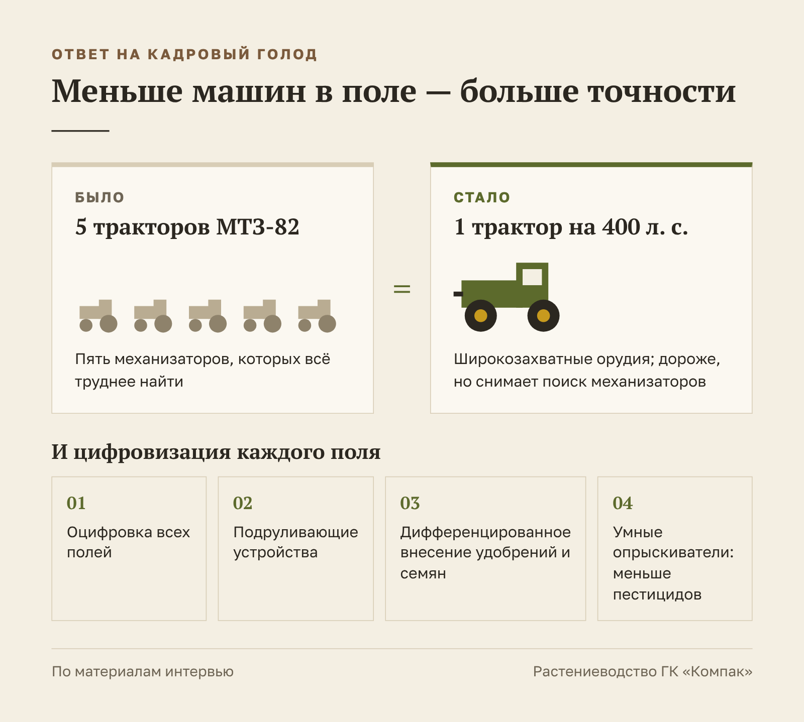
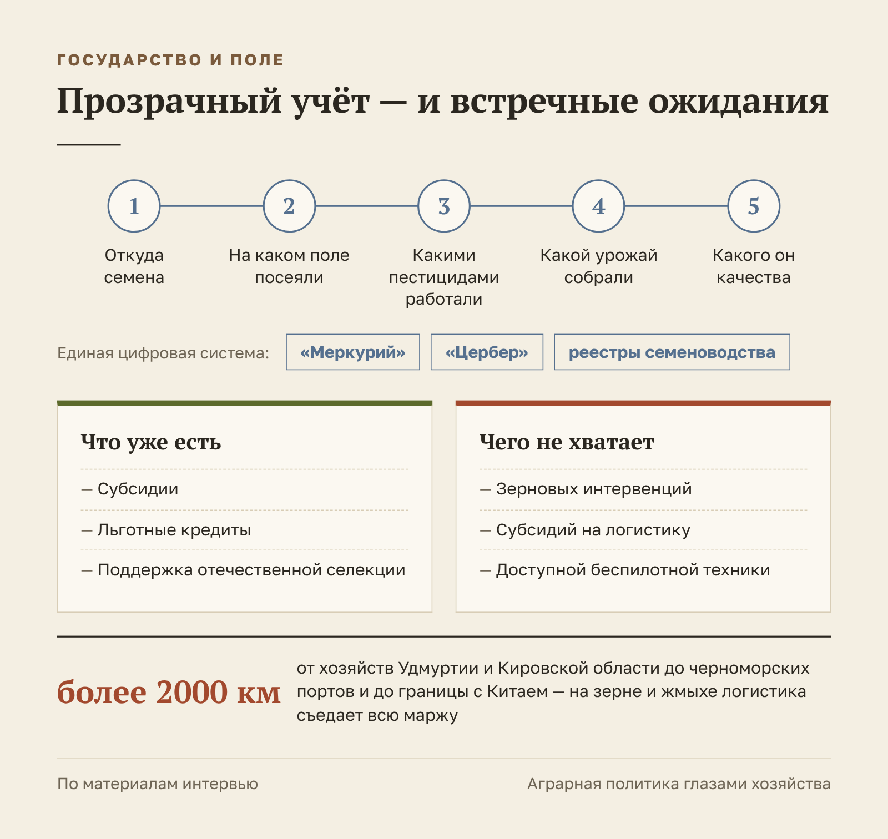

ГК «Компак» · Интервью
Интервью с основателем ГК «Компак» для журнала «Бизнес-класс»
ГК «Компак»
ГК «Компак» — агропромышленная группа из Удмуртии. Поставляет семена и средства защиты растений, выращивает зерновые и масличные культуры, развивает сельхозтехнику и собственный маслозавод: рапсовое и льняное масло холодного отжима продаёт по России и в Китай.
- Площадка
- Журнал «Бизнес-класс»
- Формат
- Интервью, ~25 тыс. знаков
- Год
- 2026
Редакции журнала «Бизнес-класс» требовалось большое интервью с основателем агрохолдинга — о пути в бизнесе, ценах, кадрах и будущем отрасли. В 2026 году подготовила материал от расшифровки разговора до готового текста с инфографикой.
Задача
Подготовить для делового журнала интервью с основателем агрохолдинга.
Решение
Собрала из расшифровки цельный текст, сохранила живую речь героя и проверила все цифры.
Результат
Интервью согласовано героем и принято редакцией без структурных правок.
Земля не терпит равнодушных
Основатель агрохолдинга — о том, почему хозяйства уходят от зерновых к льну и рапсу, зачем полю цифровая карта и чего аграрии ждут от государства
Артур Курылёв по образованию математик-программист. В девяностые он собирал и продавал компьютеры, торговал канцелярией и книгами, потом работал в отраслевом НИИ, а в 2000 году основал группу компаний «Компак». Сегодня у холдинга собственный маслозавод и тысячи гектаров посевных площадей. В разговоре для «Бизнес-класса» он рассказал, где проходит главный барьер агробизнеса, почему лён окупается быстрее других культур и какой будет наша еда через двадцать лет.
Группа «Компак» — справка
- Основана в 2000 году.
- Сотрудники: более 160 человек.
- География: Удмуртия, Пермский край, экспорт в КНР.
- Профиль: агропромышленный холдинг полного цикла — от поставки семян и средств защиты растений до переработки. В составе группы также сельхозтехника, строительство и земельные активы.
- Маслозавод: с 2019 года производит рапсовое и льняное масло холодного отжима на оборудовании Florapower (Германия), мощность переработки — до 300 тонн семян в сутки. Масло продаётся по России и экспортируется в Китай.
- Награды: призёр всероссийского конкурса «Экспортёр года» в сфере продукции АПК.
За этими цифрами стоят двадцать с лишним лет работы, и начинался холдинг совсем не с полей.
От компьютеров к комбайнам
Начинаем с того, как математик пришёл в сельское хозяйство и пригодилась ли ему профессия.
— Артур Васильевич, вы математик-программист по образованию. Как вы с такой подготовкой оказались в сельском хозяйстве?
— Как и большинство предпринимателей моего поколения, я начинал с торговли в девяностые. Продавал всё подряд: компьютеры и комплектующие — сам собирал и продавал. Потом канцелярские и спортивные товары, книги, даже нижнее бельё. Где возникал спрос, туда мы и выходили со своим предложением.
В девяносто седьмом году меня пригласили на должность заместителя директора в Удмуртский государственный НИИ сельского хозяйства. Там я получил опыт и представление об отрасли, погрузился в её специфику. А в 2000 году организовал собственную компанию по продаже пестицидов и семян — так мы начали работать в сельском хозяйстве самостоятельно.

— То есть математическое мышление в аграрном бизнесе пригодилось?
— Безусловно. Сельское хозяйство сегодня во многом про цифры, аналитику, прогнозирование. Математический склад ума помогает видеть закономерности, просчитывать риски и принимать взвешенные решения. Без аналитического подхода в агробизнесе делать нечего.
Цены, которые невозможно спрогнозировать
Разговор о трудностях отрасли Артур Курылёв начинает не с денег, а с людей.
— Какой главный барьер сегодня в агробизнесе?
— Первоочередная проблема — трудовые ресурсы. Отсутствие квалифицированных кадров сдерживает эффективность всей отрасли. Причём не хватает не только специалистов, но и простых работников: механизаторов, сотрудников молочных ферм. Это проблема номер один.
Второй момент — волатильность рынка. Вы привыкли оценивать стоимость продуктов на полках магазинов, а мы работаем в оптовых ценах, по которым у нас покупают товар. В двадцать втором году мы продавали зерно по восемнадцать рублей за килограмм. Сейчас — существенно дешевле. Инфляция растёт, энергоносители дорожают, зарплаты увеличиваются, а закупочные цены на нашу продукцию падают. Многие хозяйства уже сокращают посевы зерновых: для ряда предприятий такая динамика стала настоящим испытанием.
«В двадцать втором году мы продавали зерно по восемнадцать рублей за килограмм. Сейчас — существенно дешевле. При том что инфляция растёт, энергоносители дорожают, зарплаты увеличиваются»
Та же ситуация с молоком: в первой половине прошлого года закупочные цены доходили до 45–50 рублей за литр, сейчас — 29. Понимаете масштаб? Ты составляешь годовой бизнес-план, а спрогнозировать закупочные цены невозможно даже на год вперёд, не говоря уже о трёхлетнем планировании.

— А процентные ставки?
— Они влияют, но не так критично: государство поддерживает отрасль, есть возможность получить льготный кредит. Раньше мы брали под два, три, пять процентов годовых. Сейчас ставки выше, но это всё же не главная боль.
Климат и новые культуры
Потепление для северных аграрных регионов — тема неоднозначная. В Удмуртии, по словам собеседника, оно скорее расширяет возможности.
— Изменение климата — это угроза или возможность для вашего региона?
— В нашей климатической зоне это скорее плюс: можно выращивать культуры, которые раньше здесь не вызревали. Когда зерновые стали убыточными, вектор сместился к масличным — рапсу и льну масличному. Это экономически оправданное направление.
Но мы идём дальше и экспериментируем с соей и подсолнечником — культурами, совершенно нетрадиционными для нашего региона. Пробуем кукурузу на зерно: она востребована как корм для молочного животноводства, которым славятся наши края. Подбираем сорта и гибриды, которым хватает нашего вегетационного периода и суммы активных температур, чтобы полностью созреть.

— Какая культура даёт самый быстрый возврат инвестиций?
— Лён масличный. Во-первых, технологически это наименее сложная культура. Во-вторых, специальных вложений она не требует: подходят обычные зерновые комбайны и стандартные мелкосемянные сеялки. Цена, конечно, колеблется — бывает сорок рублей за килограмм, бывает двадцать пять. Но даже при двадцати пяти лён выгоден. Это самый быстрый способ войти в агробизнес.
«Лён масличный — наименее сложная культура. Даже при двадцати пяти рублях за килограмм он экономически выгоден»
Один трактор вместо пяти
К кадровой теме возвращаемся ещё раз — теперь чтобы поговорить о решениях.
— Вы несколько раз упомянули кадровый голод. Как справляетесь?
— Сказать, что мы этот вопрос решили, не могу: мы постоянно в поиске. Причин две. Первая — мы расширяем посевные площади, и людей нужно больше. Вторая — мы проводим, как я это называю, выбраковку. Не все готовы работать в нашем режиме. У нас абсолютная нетерпимость к нарушению дисциплины: появился на работе в нетрезвом виде хотя бы раз — расстаёмся без вариантов. Это дисциплинирует коллектив, но усложняет набор. Честно говоря, я жду, когда нас наконец обеспечат беспилотными тракторами и комбайнами.
При этом у сельского хозяйства есть неоспоримое преимущество: спрос на продовольствие будет всегда. Но без квалифицированных специалистов результата не добиться. Два ключевых человека в любом хозяйстве — агроном и зоотехник, без них производственный процесс не выстроить. Все остальные — инженеры, экономисты, ветеринары — помогают этим двум главным специалистам.
— Выход — автоматизация?
— Именно. Процессы нужно автоматизировать максимально. В растениеводстве это уход от слабых тракторов вроде МТЗ-82 к энергонасыщенным машинам на 400 лошадиных сил с широкозахватными орудиями. Один такой трактор заменяет пять маленьких. Да, он дороже, и к нему нужны специализированные агрегаты. Но, сделав эту инвестицию, ты снимаешь головную боль с поиском механизаторов и оптимизируешь весь производственный процесс.
Второе направление — цифровизация: оцифровка полей, подруливающие устройства, системы дифференцированного внесения удобрений и семян, умные опрыскиватели, которые снижают пестицидную нагрузку и экономят деньги. Цифровых решений сегодня много, и они позволяют точнее работать с имеющимися ресурсами. Для сельхозпредприятий это уже вопрос выживания.

— У вас даже была идея посадить на тракторы девушек?
— Был такой период! Пока, к счастью, справляемся своими силами. Но если ситуация станет критической — почему нет? У нас энергонасыщенные тракторы с подруливающими устройствами, траектория движения задаётся автоматически. Если помогли навесить орудие — дисковую борону или посевной комплекс, — остаётся следить, чтобы не произошло ничего непредвиденного. Думаю, девушки с этим прекрасно справятся.
Сельское хозяйство через десять лет
Прогноз собеседника на ближайшие годы связан с той же автоматизацией — но уже в масштабе всей отрасли.
— Каким вы видите сельское хозяйство через десять-пятнадцать лет?
— Я очень рассчитываю на беспилотные тракторы и комбайны. Управлять процессом будут операторы из офиса — так же, как сейчас управляют беспилотными летательными аппаратами. Через десять лет передовые хозяйства точно к этому придут. В животноводстве автоматизация идёт даже быстрее: доильные роботы уже работают. Дальше — автоматическое составление рациона и полностью автоматическое кормление.
Я вижу максимальную цифровизацию всех процессов. Мы сможем моделировать, какую культуру лучше посеять на конкретном участке и при каких условиях получить нужную урожайность и качество. В селекции такие технологии уже применяются.
Чего аграрии ждут от государства
Цифровизация полей идёт не только по инициативе хозяйств — её последовательно продвигает государство.
— Государство в этом помогает?
— Государство подталкивает — мне нравится именно это слово. Все поля сейчас заводятся в единую цифровую систему. Хозяйства фиксируют всё: откуда семена, на каком поле посеяли, какими пестицидами работали, какой урожай и какого качества собрали. Действуют системы «Меркурий», «Цербер», федеральные реестры семеноводства. Есть субсидии, льготные кредиты, поддержка отечественной селекции. Государство заинтересовано прежде всего в прозрачности и в отсутствии теневых поставок.

Но хотелось бы большего. Раньше государство проводило интервенции — закупало зерно для стратегических нужд по ценам чуть выше рыночных, и это нас поддерживало. В прошлом году интервенций уже не было, и хотелось бы, чтобы эту практику возобновили. К тому же мы в Кировской области и Удмуртии находимся далеко и от черноморских портов, и от китайской границы — более чем в двух тысячах километров.
Логистика не позволяет нам конкурировать с южными регионами. Для Дальнего Востока государство субсидирует перевозки, а для нас — нет. Масло мы экспортируем, потому что это маржинальный продукт. А на зерне и жмыхе стоимость логистики съедает всю маржу.
И ещё: без субсидирования беспилотной техники массовая автоматизация невозможна. Отечественные тракторы пока отстают от иностранных. Хотелось бы, чтобы государство вместе с производителями больше вкладывалось в передовые разработки и чтобы такая техника доходила до рядовых хозяйств по приемлемым ценам.
Что мы будем есть через двадцать лет
Последние вопросы — о том, что волнует каждого: о качестве еды.
— Насколько безопасна еда будущего?
— Требования к безопасности сельхозпродукции ужесточаются, и это хорошо. В шестидесятые — восьмидесятые годы мы ели куда более вредную продукцию: у пестицидов того времени было гораздо более сильное последействие. Сегодня электронные системы контролируют всё: нельзя использовать в поле незарегистрированный пестицид, нельзя превысить дозировку — система сразу это зафиксирует. Контроль за выращенным сырьём будет только усиливаться.
А вот в том, что делают с этим сырьём переработчики, у меня уверенности нет. Они активно удешевляют продукцию, добавляя химические вкусовые добавки. В долгосрочной перспективе, с ростом населения Земли, я допускаю, что натуральные продукты станут дорогим эксклюзивом для определённой части людей. А остальные, возможно, перейдут на искусственную пищу — по сути, набор белков, жиров и углеводов, полученных химическим путём. Но, слава богу, это, скорее всего, история не нашего поколения. Буду рад, если такой прогноз не сбудется.
«Натуральные продукты могут стать дорогим эксклюзивом. Но, слава богу, это, скорее всего, история не нашего поколения»
Честность, порядочность, пунктуальность
В завершение — о личном: о принципах, о том, что помогает держаться, и о стиле управления.
— Три ваших принципа в бизнесе?
— Честность, порядочность и пунктуальность. Причём пунктуальность для меня особенно важна: время имеет огромную ценность, и я отношусь к этому предельно серьёзно.
— На что опираетесь, чтобы не опускать руки?
— Ты постоянно помнишь, что отвечаешь не только за будущее своих детей, но и за сотрудников и их семьи. Это ощущение ответственности — возможно, в какой-то степени гипертрофированное — держит в тонусе. А когда становится совсем непросто, опираюсь на семью и друзей. Друзей я бы поставил наравне с семьёй. Друзья, с которыми общаешься сорок лет, — это дорогого стоит. Даже если не могут помочь напрямую, они выслушают. А когда проговариваешь проблему вслух, начинаешь видеть ситуацию иначе: сформулировал — и уже нашёл ответ.
— Какая ваша главная сила как руководителя?
— Мне сложно оценивать себя. Но я убеждён: в основе управления должна быть человечность — неважно, личные это отношения, производственные или деловые. Когда умеешь слушать и слышать собеседника, понимаешь его боли и проблемы, ты сможешь решить и свои задачи. Чтобы управлять людьми, нужно знать, какой у человека настрой, что его беспокоит, на что он ориентирован. Именно человеческий подход позволяет выстроить весь бизнес-процесс. На мой взгляд, это фундамент.
«В основе управления должна быть человечность. Когда умеешь слушать и слышать собеседника, сможешь решить и свои задачи»
Этим ответом Артур Курылёв и подводит итог: агробизнес держится на цифрах и технике, но работает он благодаря людям.